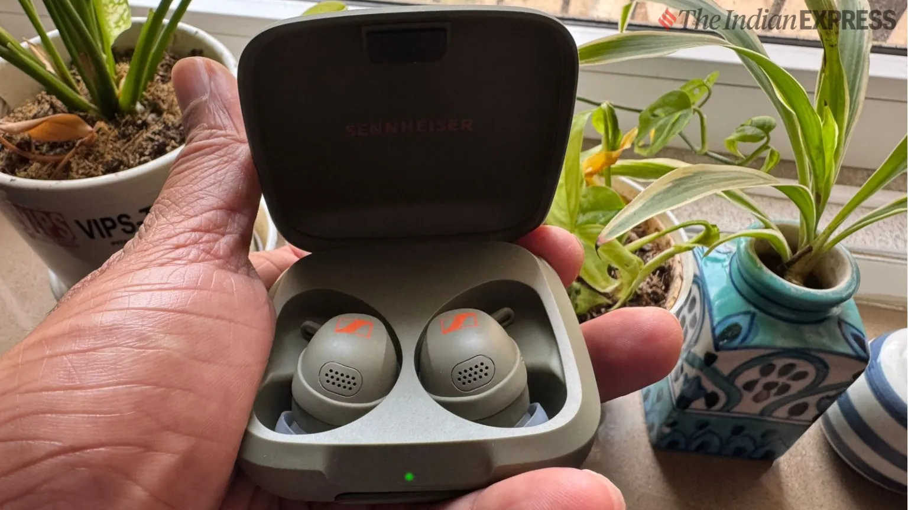

The Sennheiser Momentum Sport is a unique truly wireless earphone designed for the gym-goers who prioritise fitness tracking and situational awareness alongside great sound.
Rs. 27,990
Are there a pair of perfect wireless earphones for the gym? Well, Sennheiser seems to think so and its Sennheiser Momentum Sport wants to stand out in the gym by offering more than audio awesomeness.
The Sennheiser Momentum Sport is a different truly wireless earphone, in many ways than one. To start with, the design is unique, both for the earpieces as well as the charging case. The charging case is larger than usual and has a rubber finish which suggests clearly that it wants to be used in sweaty conditions or near the pool.
The earpieces are different in their shape and size. It is not exactly larger than the largest ones I have used, but its teardrop-like shape makes it feel so for sure. Because of this, it also comes with fins that need to be looped in to keep the earpieces in place when you are on the treadmill or like me treading the local roads in the humid Delhi climate.